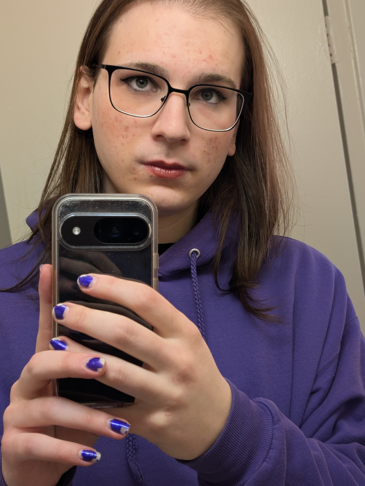

About Me

Hi, my name is Jasmine, and I am 24. Growing up I was always a creative person, I played guitar and drew art almost everyday. When I learned to code, I started to make small games by myself, computer programming became my new favorite medium for art. But as I entered the workforce as a software developer, I discovered that the work was not creative enough for me.
As I tried to use my skills to be creative, there was always one major issue with the websites and interfaces that I created, I never learned to make proper designs, everything I made had an amateur look to it. In order to develop a proper and objective eye for designs, I have enrolled into the IMD Program at Algonquin College starting on January 12th, 2026. It is my hope that with the learning and co-op in this program that I will be able to land a job where I create pretty websites and where I incorporate photographs and art that I make into those sites.
"I may be crazy, but that don't make me wrong."Marsha P. Johnson